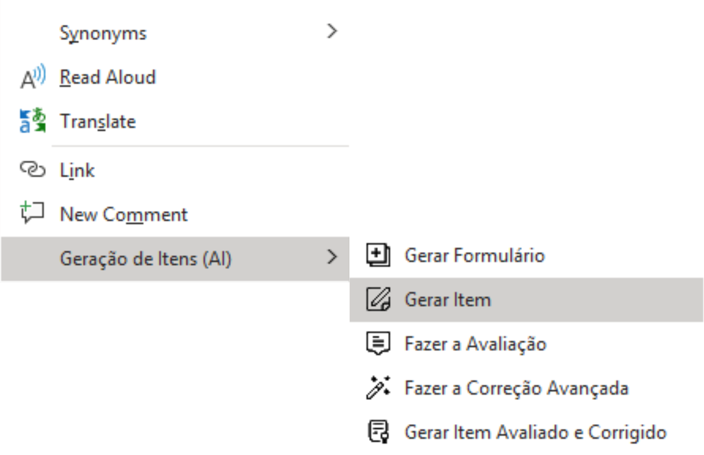
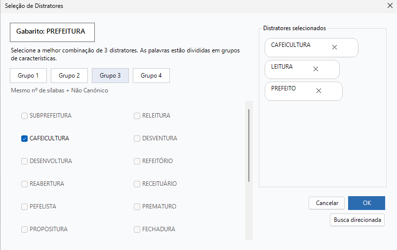
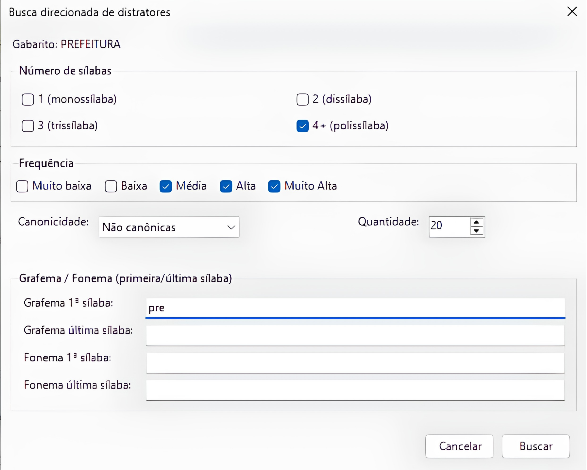

Habilidade Ler Palavras
Escolha os distratores para o gabarito a partir de listas organizadas por características linguísticas.
Selecione a melhor combinação de 3 distratores.
Mesmo nº sílabas + Não Canônico
Fluxo de elaboração
Gerar o item
Na opção "Gerar Item", escolha a habilidade D10-13EF.
Selecionar distratores
Navegue pelos grupos de características e marque as melhores opções para o gabarito.
Refinar ou buscar
Use a busca direcionada para filtrar por sílabas, frequência, canonicidade, grafema ou fonema.
ACESSO
Como acessar e usar a funcionalidade
Clique com o botão direito no documento Word e acesse o submenu Geração de Itens (AI). Selecione Gerar Item para abrir o formulário de geração e, em seguida, selecionar a habilidade D10-13EF e prosseguir para a seleção de distratores.
1. Menu de contexto (Word)

2. Grupos de distratores

3. Busca direcionada

Resultado
Depois de selecionar os distratores, o item fica pronto para revisão. Se quiser, você ainda pode remover, substituir ou ajustar as escolhas a qualquer momento.
O que muda para você
Escolha orientada
Distratores organizados por grupos de características linguísticas relevantes para a habilidade.
Busca direcionada
Filtre por número de sílabas, frequência, canonicidade, grafema ou fonema para encontrar exatamente o que precisa.
Confirmação ágil
Painel lateral mostra os 3 distratores selecionados em tempo real. Confirme ou ajuste antes de finalizar.